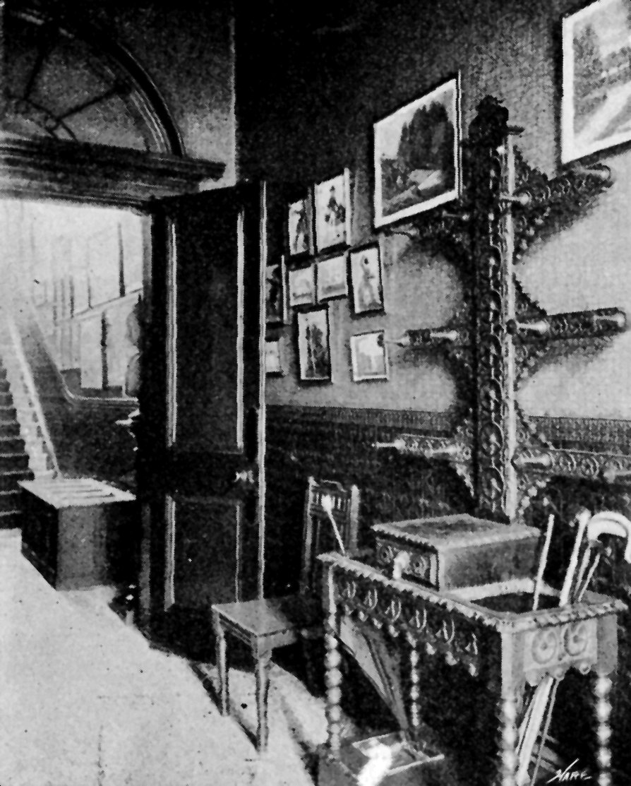

"LIONS IN THEIR DENS."
No. II.—GEORGE GROSSMITH AND THE HUMOUR OF HIM.
BY RAYMOND BLATHWAYT.
ILLUSTRATIONS BY GEO. HUTCHINSON.
(Photographs by Messrs. Fraddle and Young and Alfred Ellis.)
{kind=link}
A little, slight man, with a thin, clever, mobile, clean-shaven face, a sharp inquisitive nose surmounted by a perpetual pair of pince-nez, and a rather sarcastic mouth, from which wit and humour as light and airy as the cigarette smoke which accompanied each remark continually flowed.
Mr. George Grossmith, the well-known actor and society clown.
He stands on the hearthrug of his own special sanctum in his handsome house in Dorset Square, with his back to the fire, cigarette in his mouth, his hands now in his pockets, now waving in the air, as he vivaciously tells me the story of his busy, energetic and wonderfully interesting life.
{kind=link}
"I was born," said he, "in 1847. I come of a family of actors and reciters. My father, whose portrait you see there on the wall, was a well-known lecturer and entertainer. Sixty or seventy years ago my uncle created a great sensation as a child actor, and he was commonly known as the 'celebrated infant Roscius.' Come out into the hall," continued the lively little entertainer, "and I will show you some old engravings which represent him in his favourite characters. Then my brother Weedon, as you know, is, of course, a well-known actor, as well as a clever artist, and part author with myself of several sketches which have appeared in Punch. My eldest son now begins to display the family tendency to a most alarming extent. For my own part, I started my career as a reporter at Bow Street Police Court, a training which I have found invaluable in many respects ever since. My subsequent history as actor and society clown is so well known that I need not trouble you with it any further."
"I suppose you find the taste of your audiences has gone up considerably within the last twenty years, do you not?"
"Why, yes," he replied. "They wouldn't stand to-day what they used to roar at then. My music is quite elaborate compared with the two or three chords which easily satisfied people in the sixties and early seventies. Listen to this," continued my host, as he sat down to the piano and struck a couple of very simple chords. Then he glided softly into what he termed a modern accompaniment. It was all the difference between "Ten Little Niggers" and a slumber song of Schubert.

MR. GROSSMITH'S HOUSE.
{kind=link}
"And do you find the public very critical?"
"Well," he replied, with a smile, "they are very kind. It is your professional critic who is severe, though I can honestly say they invariably treat me well. Criticism up to a certain point is good enough. Beyond that point it is absolutely disabling to me. My father was a very severe critic. When we went out together he used to take the first half-hour, and then go to the back of the hall and criticise me. But it so hampered me by causing me to think of and consider every pose that I had to beg of him to desist. And then again, as regards criticism, I always think—it may be very conceited on my part—that I know a great deal more what the public want than my critics do. I declare to you I should have to take everything out of my sketches if I attempted to carry out all the suggestions that are made to me. I can absolutely feel the public pulse after so many years upon the platform. I am almost always right. When I first started 'See me Dance the Polka' it fell quite flat. I gave it up, although I felt sure it ought to go. The public then demanded it, and it went with a swing. The public had changed its mind. Not I."

THE DINING ROOM.
"And how do you prepare your sketches?" said I, as Mr. Grossmith lit another cigarette, and took up his position on the hearthrug again.
"Anyhow and anywhere the idea comes to me for a sketch. I am seated in a railway train, and I think of a sea-side sketch. I close my eyes and try to recall every single feature of interest on a crowded fashionable beach in the height of the season. Nothing is too unimportant. The way in which an old lady settles herself comfortably into her chair, the manner in which a man, especially a shy man, walks into the room, all these things, slightly exaggerated, but still true to nature, are immensely appreciated. First I have the idea, then I elaborate, sometimes for months, then I produce on the stage, and the people say, 'How remarkable it is you should invent all this on the spur of the moment!' That, of course, is a great compliment. The song-writing is always amusing," continued Mr. Grossmith, as he placed in my hand a little notebook in which were suggestions and elaborations innumerable. One thing I noticed, which he himself had condemned, but which was decidedly amusing, although it has never been allowed to see the light of day:
{kind=link}
| "I've been engaged to many, Quite a score of times at least; I don't think I with safety can say Where I met my first fiancée. Oh! 'tis better to have loved and lost Than never to have loved at all; So I may say I have loved and lost a lot, And my fickleness has cost a lot." |
"Ah!" said Mr. Grossmith, as he leaned over me and saw what I was reading; "my better judgment told me that was not good enough for the public."
{kind=link}
{kind=link}
{kind=link}
{kind=link}
{kind=link}
Then came a pencilled note in this little book, "You can take a horse to water, but can't make him drink." "That gave me an idea," cried Mr. Grossmith, as he sprang to his feet. "You can take a boy to the piano, but you can't make him play.' Thought I to myself, that would make a capital sketch. And here is how I set about it," continued he, as he proceeded to illustrate his remarks. "Imagine a little fellow in the corner there. I then begin in dumb show to encourage him to come to the piano. 'Come on, my boy; you know you can play that pretty piece you played yesterday. Come on, there's a good fellow!' Wonderful what you can do with persuasion! He refuses. I attempt to lead him to the piano. He won't budge an inch. I carry him under my arm and seat him in front of the instrument, the audience roaring all the time. At last his mistakes are so many and so ridiculous, I lose all patience and catch him a mighty box upon the ears! Tableau!! Of course there is no boy on the platform at all, I am quite alone, but I have so thoroughly lost myself in my imagination that people have declared years after, 'Oh! but I am quite sure you had a boy with you; why, don't you remember how you boxed his ears?'"
{kind=link}
No less marvellous than his power of acting is his power of mimicry. "I will show you how I do Irving," said he, and in a moment the little man had ruffled his hair, had assumed to the life not only Irving's peculiar gait, but, even more remarkable still, had managed to secure almost exactly the very expression of the great tragedian's face.
"Then again, I find it a good idea to take up some craze or topic of the moment. 'The Drama on Crutches' I wrote when the craze first arose amongst the aristocracy for going on the stage. One of the sketches which you will find outlined in that little notebook is entitled, 'Is Music a Failure?' and I endeavoured to answer the question by showing how popular it is among all classes of the community." I will quote pretty freely from this outlined sketch, as it will give my readers an idea, better than anything else would do, of the manner in which Mr. Grossmith prepares his delightful sketches.
"I am not going to treat the subject seriously," he writes, "but in my own particular, impertinent way. The question often arises—are we a musical nation? The foreigners think we are not. But where in the wide, wide world is there a country where you will hear so many organs and German bands? Where is the country, excepting ours, that can appreciate the concertina? Where, except in England, can you hear that delightful combination of harp and cornet outside a house of refreshment? The prejudice of other nations is distressing; and as for their ignorance, why, I don't suppose Italy and Germany have even heard of the ocarino and the Jew's harp."
And so the sketch runs on, until, in speaking of the universal manner in which music is appreciated in England by all classes, Mr. Grossmith goes on to say: "We have made rapid strides, so have our servants. They don't know how to dust the piano, but they can play it. Everybody plays the piano, from the Peerage to the School Board. Then look how music has crept into our homes and social circles. Besides the piano, the mother and daughters play the banjo, the son plays the first fiddle, and the father the second fiddle—as usual. I know of a Lord Mayor who plays the trombone, a clergyman who plays the big drum—that's a nice unpretentious, giddy instrument!—and I know of any number of members of Parliament who blow their own trumpets!!" And so the notes go brightly on through many pages.
{kind=link}
{kind=link}
{kind=link}
{kind=link}
"This," explained my host, "is a fair specimen of the method I employ in preparing a drawing-room sketch. As a rule, my audiences of that class are capital. I always love a well-dressed audience, it is so cheerful. You mayn't perhaps get as much applause as you do from the sixpenny gallery, but then applause often spoils your point. Once, however, I remember singing at a private house in the country to an odd assortment of people. I was informed that the party followed a wedding which had taken place in the morning. If it had followed a funeral it could not have been more gloomy and depressed than it was. I played the piano and the fool for three-quarters of an hour, and anything more dismal than the result it would be impossible to conceive. A temptation seized me suddenly, and I said: 'Ladies and gentlemen,—I am going to reveal to you a secret. Pray don't let it go any further. This is supposed to be a comic entertainment. I don't expect you to laugh at it in the least; but if, during the next sketch, you would only once oblige me with a society smile, it would give me a great deal of encouragement.' The audience for a moment were dumbfounded. They first began to titter, then to laugh, and actually to roar, and for a time I could not proceed with the sketch. They were transformed into a capital and enthusiastic audience, and the hostess told me that both her guests and herself were most grateful to me. I am sometimes amused with the little eccentricities of people who wish to secure my services for their parties. A gentleman once wrote to me to entertain some friends of his, and, added he, 'I trust that your sketches are strictly comme il faut, as I have several young daughters.' I was so immensely tickled by this that, rightly or wrongly, I replied that my entertainments were as they should be, for I was recently married, and hoped myself to have several young daughters. He wrote thanking me for this assurance, and I was to consider myself accordingly engaged. There is a story I tell in my book which will bear repetition: A young gentleman once called upon me. He explained that he was acting as a sort of ambassador for a friend of his, Mrs. ——, of Mayfair, who wished me to dine at her house. I replied that I had not the honour of the lady's acquaintance, and, though appreciating her kind invitation, I did not see how I could very well avail myself of it. He said that Prince Somebody or other and La Comtesse de So-and-so would be dining there, and Mrs. —— would be so pleased if I would join the party, and sing a little song after dinner. 'Oh,' I said, 'if Mrs. —— wishes to engage me professionally, that is another matter, and if I am at liberty, I will come with much pleasure.' 'Well,' said the ambassador, 'I fancy Mrs. —— is under the impression that if she includes you in her dinner party it is an understood thing that you sing afterwards.' 'I am afraid I do not understand that,' I said. 'It would not pay me to do so. I only consume about ten shillings worth of food and wine, and my terms are more than that.' There," said Mr. Grossmith, "could you have believed that anyone would have been so inconceivably mean and caddish?"
{kind=link}
{kind=link}
"I have had some curious experiences on tour," he went on. "That is hard work, if you like. I have gone a four months' tour without missing a night. It takes it out of one terribly. But it is very paying work. In the South of England I have made as much as £300 a week. My friends tried to frighten me as to the apathy of my Scotch audiences; as a matter of fact, I have no better audiences anywhere. I like performing to country audiences. I am never nervous as I am apt to be at St. James's, where there are a number of my friends. And it is on my country tours that I have many curious experiences. Amateurs invariably call at the hotel to see me, and to ask my advice as to their powers of recitation. Some are quite hopeless, and I haven't the heart to condemn them utterly, or to go beyond 'I tell you quite candidly, since you ask me, that I have heard better.' As a rule they are very quiet and modest, but now and again one encounters some fearful specimens. I remember once at a country town, which we will call Mudborough, a flashy young cad, in a very loud suit, called to see me with a parcel under his arm. He had come, he told me, to learn my opinion of his singing. He further informed me that he was known as 'the Mudborough Grossmith.' He didn't have the courtesy to take off his hat; he walked up and down my room, whistling, singing, and handing me over now and again specimens of his powers as a water-colour painter. I looked at them. At last, tired of the idiot and his airs, I said, 'I hope your musical sketches are better than you water-colour sketches.' Nothing, however, could snub this fellow. He proceeded straightway to sing me an improved version of 'See me Dance the Polka.' 'Do your audience like it?' I asked. 'I should think they did,' he replied; 'I will let you have that last verse if you like.' I thanked him sarcastically, and at last he withdrew. I have, however, come across some real talent in this way. For instance, that admirable actor and entertainer, Eric Lewis, is a protégé of mine, and you could not have a better man than he. Another amusing incident occurred at Southsea. My secretary was in a shop one day, and he overheard three ladies discussing the respective merits of Corney Grain and myself. Two of them were for Corney Grain and one was for me. Finding at last that the odds were too strong for her, she departed with this final shot: 'Well, never mind, Mr. Corney Grain can't jump on to a piano,' referring to my imitation of Minnie Palmer."
Replying to a question I put to him as to his theatrical experiences, Mr. Grossmith told me that it was in the November of 1877 that he received the following letter:—
"Beefsteak Club,
"King William Street,
"Tuesday Night.
"Dear Mr. Grossmith,—Are you inclined to go on the stage for a time? There is a part in the new piece I am doing with Gilbert which I think you would play admirably. I can't find a good man for it. Let me have a line, or come to Albert Mansions to-morrow, after 4; or Thursday, before 2.30.
"Yours sincerely,
"ARTHUR SULLIVAN."
{kind=link}
{kind=link}
"This was a great moment in my life, although at the time my father, whose good judgment I valued much, was of opinion that I was not very successful as an actor. Sullivan, however, who had heard me give a musical sketch at a dinner party, was of the contrary opinion, and felt sure that I should suit him. It appears he and Arthur Cecil were both writing letters at the Beefsteak, when the former said, 'I can't find a fellow for this opera.' Cecil said, 'I wonder if Grossmith—' Before he had finished the sentence, Arthur Sullivan said, 'The very man!' And so I was engaged. I am much indebted to these two Arthurs," continued the bright little man with a laugh. "I reverence the very name of Arthur. I remember when Gilbert wanted to engage me for the part of John Wellington Wells, though I saw the part would suit me to perfection, I said to him, 'I should have thought you required a fine man with a fine voice for the part of a magician.' I can still see Gilbert's humorous expression as he replied, 'That is just what we don't want.' I played Sir Joseph Porter in 'Pinafore' every night for nearly two years. Long runs don't affect the nerves of the actors nearly as much as they affect the performance. Constant repetition begets mechanism, and that is a terrible enemy to contend against. I make a point of playing my best to a bad house; for it is a monstrous thing to slur through one's work because the stalls are empty, and thereby punish those who have come for the fault of those who have not. Still, I repeat it, constant repetition is a dreadful thing. Fancy playing 'Pinafore,' as I did, for 700 nights without missing a single performance!"
{kind=link}

As he said this Mr. Grossmith led the way out of the room in which we had been talking, and which he told me was his own special sanctum, "into which no one is ever allowed to come except my wife, for anyone rushing in here when I was composing or thinking out a sketch would inevitably drive every single idea from my head," and we went upstairs together. Here in the drawing-room he set himself down to a spinet which bore the date of 1770, and he struck a few exceedingly sweet-sounding, if slightly tinkling, chords from it. "And this," said he, "is the oldest Broadwood in England. You can see for yourself the date—1795." Downstairs he showed me a beautiful model of a steam engine, upon which he was enabled to ride, and which he could drive himself. "I thoroughly understand locomotives," said he, as he pointed to a shelf full of all the works upon the subject which he had been able to discover.